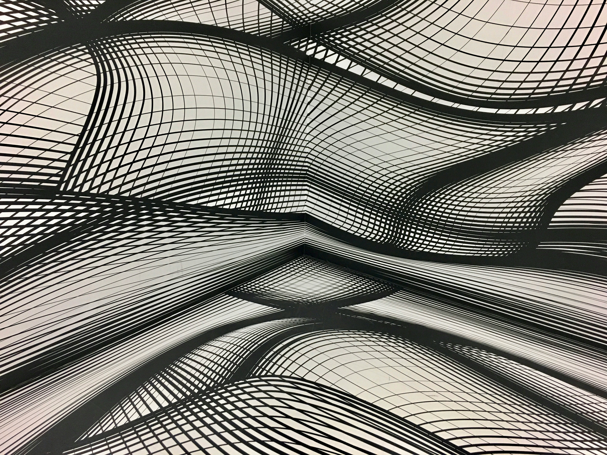
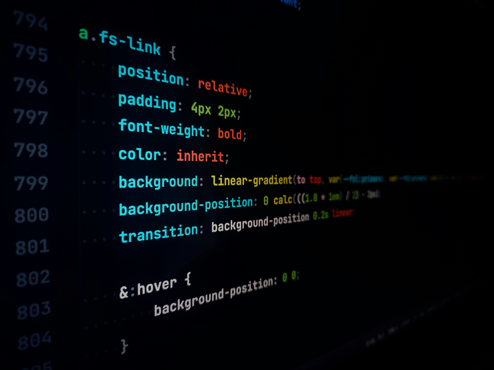
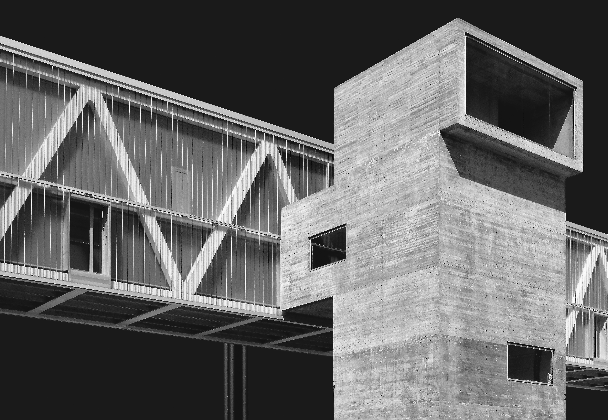
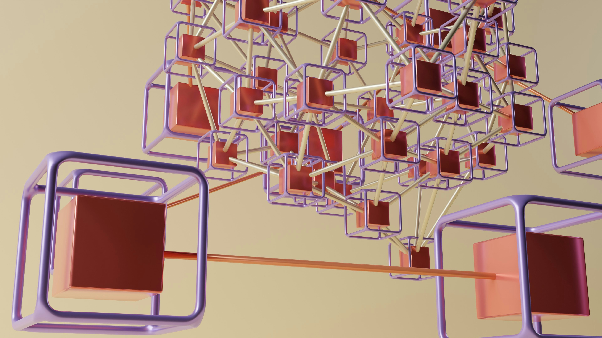
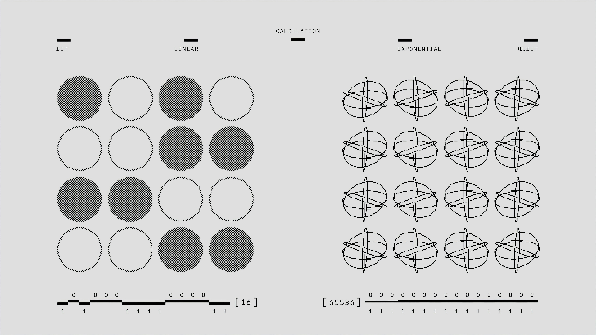

PROJECT TITLE
Exploration of generative patterns using modular arithmatic. Focus on visual weight and balance within a constrained 8px grid system.
#SYSTEMS
#TYPOGRAPHY

INTERACTIVE SKILL: CSS HOVER
EFFECT
Demonstrating rapid state transistions and color inversion through standard CSS utility classes. Hover over this card to view the visual transformation.
#INTERACTIVE
#MOTION
PROJECT TITLE
Multi-dimensional data visualization for urban traffic flow. Utilizing dark-gray scalar values to represent density and frequency.
#DATA_VIZ
#ALGORITHMIC

PROJECT TITLE
Design study of brutalist architecture translated into digital interface components. Emphasis on raw material feel and high contrast.
#BRUTALISM
#UI_DESIGN

PROJECT TITLE
Responsive system framework for educational platforms. Prioritizing information hierarchy and accessible data nodes.
#FRAMEWORK
#UX_RESEARCH

PROJECT TITLE
Experimental log of 100 days of layout experiments. Documentation of grid-breaking patterns and asymmetrical balance.
#LAYOUT
#EXPERIMENTAL